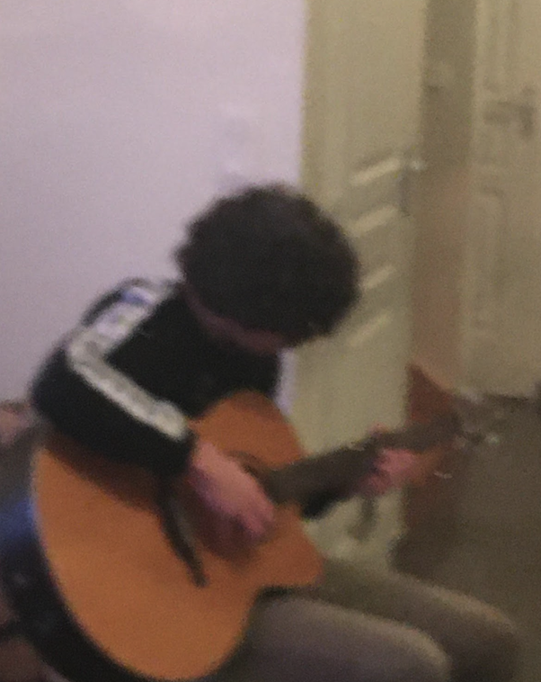

Étudiant en première année de Bachelor in Business and Administration, formation tournée vers le monde professionnel international et vers les défis futurs. Ceci s’illustre notamment grâce à l’apprentissage de la programmation dispensé par Le Wagon ;)
Guitare et Ski 🎸⛷️
Je pratique le ski depuis l’âge de mes 3 ans et le ski acrobatique depuis maintenant 6 ans. Cela me permet d’aller où je veux et de m’essayer à des saltos arrières de temps en temps. La guitare est un instrument auquel je porte un grand intérêt depuis maintenant 3 ans. Mes styles préférés sont le flamenco, le tango et le compas espagnol.
Entrepreneuriat 🧑🏻💻
Je suis auto-entrepreneur depuis la crise du covid-19 dans le marketing digital. J’ai appris à mener des campagnes facebook ads, à gérer des CRM, à prospecter, à satisfaire des clients et créer des éco-systèmes. Pour moi, cette compétence désigne le savoir-faire d’organiser un univers marketing en ligne autant qu’en physique pour optimiser au maximum les ventes d’une entreprise.